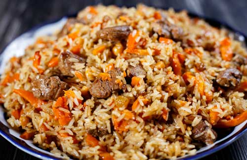

Home
Plov recipe
Plov recipe

Description
Today you will learn how to prepare traditional Central Asian plov.
You will need about 1.5 hrs, find good quality beef, lamb or chicken.
Ingredients
- Rice 500gr
- Lamb meat 500gr
- Carrot 2 pcs
- Onion 2 pcs
- Garlic clove 4 pcs
- Whole Garlic 1 ea
- Bay leaf
- Zira seasoning
- Turmeric
- Salt and pepper
- Oil
Steps
- Wash and leave in the water rice
- Pour 50 ml oil into cauldron, pur 4 smashed pcs of garlic cloves.
Fry on small heat until golden colour.
- Cut into smal pieces meat, increase heat to medium and
fry for 7 mins steering.
- Cut onion into small pieces. Cut small or grate carrot.
- Add carrot and onion into cauldron and decrease heat to small for 7 mins.
- Add Bay leafs, turmeric and zira seasoning, salt, pepper, pout 150 ml of water and keep for 25 mins.
- Add Rice, Pour water just to slightly cover all Ingredients with water in cauldron.
- Increase heat to medium to reach boiling water and then decrease heat to small and leave for 30 mins.
Cover cauldron with towel to keep all steam.
- After 25-30 mins switch off heat. And leave cauldron for another 25 mins, remaining steam
will prepare rice.
- Plov is ready you can serve with any salads you wish.